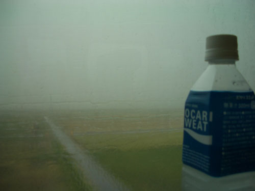
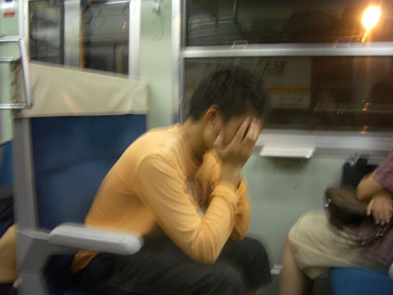
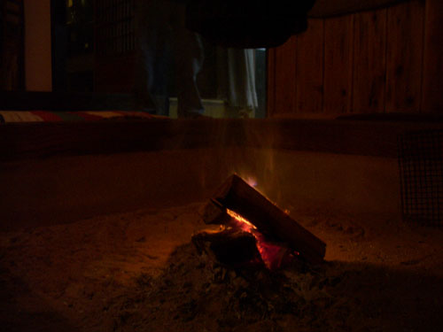
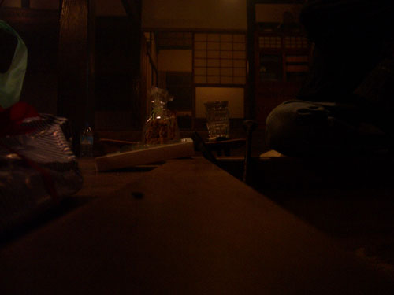

| < | > |
| To go visit friends from afar, is this not delightful? | [2004-10-14 00:51] |
| I'd had this day in mind for a long time – to go visit Yuichi in his mountain retreat. Doshi-mura, the 30km "village". João had been there last year, on his way between Hiroshima and Tokyo during the making of Kitsune. From what he had described I felt certain that Yuichi – with his beautiful stubbornness – was realizing a plan he had revealed to me many years earlier, to build houses for himself and his parents in the woods outside Tokyo. Kyoto to Mishima by shinkansen, then change twice on local trains to Gotemba. As we stood on the platform at Kyoto something extraordinary happened – the train was late. A full perplexing 20 mins late. Quite why we never discovered. Announcements in Japanese drifted over our heads like incomprehensible confetti. Of course we needn't have worried, the train arrived eventually, and soon we were ensconced in our Green (i.e. first class) seats watching the downpour.  It rained all the way to Mishima. * This was the first time we'd been on local trains. Our eyes lit up secretly, following all the little world life that, for those who lived it day to day, was probably something they longed to escape.  Finally we were standing in Gotemba station. Yuichi appeared – tanned, handsome, more mature. We shook hands, and headed outside to begin our drive into the mountains. First we'd stop off at "a little opening party for a café some friends have just started." An old shoemaker's shop that a big bald guy with a "Roy Lichtenstein" T-shirt had converted with his own carpentry. We sat around on the floor smiling at the mixed assortment of people, talking broken English and Portuguese (someone had worked with a Brazilian engineer) until Yuichi gathered us up and took us off to a hidden soba resturant where we ate perfect handmade cold soba, and admired an old photograph of the first Mejii emperor lined up with a scruffy band of long-ago warriors. An hour of twisting turning, chatting, and silently watching the road, brought us eventually out through the gateway tunnel that marks the top end of his village. Almost there. Turn off over a tight little white railing bridge, up a bumpy lane strewn with fallen chestnuts, and down, bump bump, to arrive at the magical farmhouse. Soon we were sleepily lazing by the fire, admiring how time had stopped.   |
|